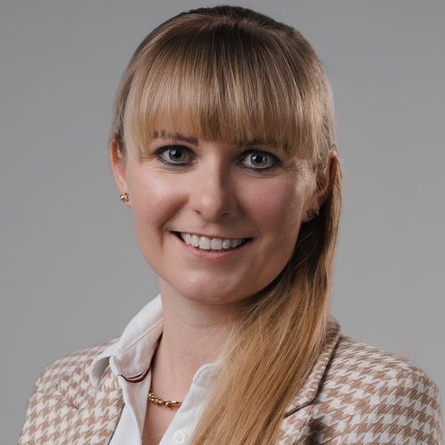
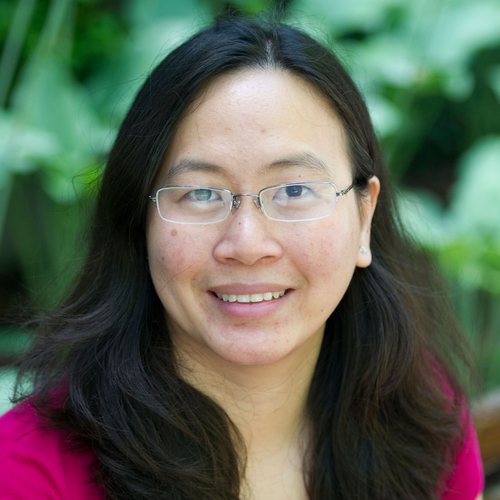
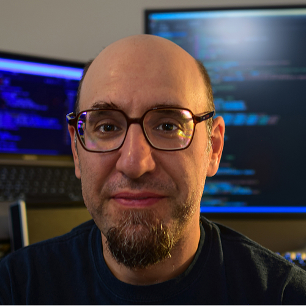

[ Introduction | Invited Speakers | Important Dates | Paper Submission | Datasets | Program Schedule | Organizers ]
10/10/2023: Program schedule updated09/28/2023: Location information posted
09/26/2023: Program schedule updated
09/19/2023: Invited speaker biographies posted
09/04/2023: Program schedule announced
07/21/2023: Decisions announced and program committee updated
06/20/2023: Important dates updated (submission deadline extension)
05/09/2023: Invited speakers added
05/03/2023: Workshop date and submission system URL added
03/30/2023: Important dates updated
03/08/2023: Website launched
Eighth
ISIC Skin Image Analysis Workshop
@ MICCAI 2023
Hosted by the International Skin Imaging Collaboration (ISIC)
Introduction
Skin is the largest organ of the human body, and is the first area of a patient assessed by clinical staff. The skin delivers numerous insights into a patient’s underlying health: for example, pale or blue skin suggests respiratory issues, unusually yellowish skin can signal hepatic issues, or certain rashes can be indicative of autoimmune issues. In addition, dermatological complaints are also among the most prevalent in primary care (Lowell et al., 2001). Images of the skin are the most easily captured form of medical image in healthcare, and the domain shares qualities to standard computer vision datasets, serving as a natural bridge between standard computer vision tasks and medical applications. However, significant and unique challenges still exist in this domain. For example, there is remarkable visual similarity across disease conditions, and compared to other medical imaging domains, varying genetics, disease states, imaging equipment, and imaging conditions can significantly change the appearance of the skin, making localization and classification in this domain unsolved tasks.
This workshop will serve as a venue to facilitate advancements and knowledge dissemination in the field of skin image analysis, raising awareness and interest for these socially valuable tasks. Invited speakers include major influencers in computer vision and skin imaging, and authors of accepted papers.
Lowell et al. “Dermatology in Primary Care: Prevalence and Patient Disposition,” Journal of the American Academy of Dermatology, vol. 45, no. 2, pp. 250–255, 2001.
Topics of interest include:
- Computer Vision in Dermatology and Primary Care
- Few-Shot Learning for Dermatological Conditions
- Skin Analysis from Dermoscopic Images
- Skin Analysis from Clinical Photographs
- Skin Analysis from Video
- Skin Analysis from Total-Body Photography and 3D Skin Reconstructions
- Skin Analysis from Confocal Microscopy
- Skin Analysis from Optical Coherence Tomography (OCT)
- Skin Analysis from Histopathological Images
- Skin Analysis from ex-vivo and Fluorescence Microscopy
- Skin Analysis from Multi-Modal Data Sources
- Explainable Artificial Intelligence (XAI) Related to Skin Image Analysis
- Algorithms to Mitigate Class Imbalance
- Uncertainty Estimation Related to Skin Image Analysis
- Human-Computer Interaction & Application Workflows for Skin Image Analysis
- Robustness to Bias from Clinical and User-Originating Photography
- Assessing and Creating Fairness of Skin Analysis in Underrepresented Groups
- Combined Application of Image Analysis and Large Language Models/Natural Language Processing (e.g., applied to EHR)
- Skin Cancer Prognosis and/or Risk Stratification Using Skin
Imaging Data
- Best Paper Award
- Honorable Mention Award
Invited Speakers
The workshop will feature several prominent names in the field of skin image analysis, including:
|
 |
Joanna Jaworek-Korjakowska, Univ. Professor, Director of the Centre of Excellence in Artificial Intelligence and Deputy Head of the Department of Automatic Control and Robotics at the AGH University in Kracow, Poland. In 2019 she obtained Habilitation in the field of technical sciences with emphasis in artificial intelligence. She is an expert at the Confederation of Laboratories for Artificial Intelligence Research in Europe (CLAIRE), member of IEEE, Polish Artificial Intelligence Society as well as an alumnus of the TOP 500 Innovator programme at Stanford University, USA. Her main research interests focus on computer vision, data mining, artificial intelligence especially deep learning methods, anomaly detection as well as clustering. |
|
 |
Jennifer G. Dy is a Full Professor at the Department of Electrical and Computer Engineering, Northeastern University, Boston, MA, where she first joined the faculty in 2002. She received her M.S. and Ph.D. in 1997 and 2001 respectively from the School of Electrical and Computer Engineering, Purdue University, West Lafayette, IN, and her B.S. degree from the Department of Electrical Engineering, University of the Philippines, in 1993. Her research spans both foundations in machine learning and its application to biomedical imaging, health, science and engineering, with research contributions in unsupervised learning, interpretable models, explainable AI, continual learning, dimensionality reduction, feature selection/sparse methods, learning from uncertain experts, active learning, Bayesian models, and deep representation learning. She is Director of AI Faculty at the Institute for Experiential AI, Director of the Machine Learning Lab and is a founding faculty member of the SPIRAL (Signal Processing, Imaging, Reasoning, and Learning) Center at Northeastern. She received an NSF Career award in 2004. She has served or is serving as Secretary for the ICML Board (formerly, International Machine Learning Society), associate editor/editorial board member for the Journal of Machine Learning Research, Machine Learning journal, IEEE Transactions on Pattern Analysis and Machine Intelligence, organizing and or technical program committee member for premier conferences in machine learning, AI, and data mining (ICML, NeurIPS, ACM SIGKDD, AAAI, IJCAI, UAI, AISTATS, ICLR, SIAM SDM), Program Chair for SIAM SDM 2013, ICML 2018, AISTATS 2023, and AAAI 2024. |
|
 |
Kivanc Kose received his Ph.D. in Electrical and Electronics Engineering from Bilkent University in Ankara, Turkey. He is a Senior Research Scientist at the Dermatology Service at Memorial Sloan Kettering Cancer Center (MSKCC). Dr. Kose's current research focuses on developing machine learning and computer vision tools for biomedical imaging modalities, such as wide-field (fluorescent) imaging, dermoscopy, and confocal microscopy, for detecting, monitoring, and managing skin, oral, and head-neck cancers. Dr. Kose serves as an associate editor at Signal Image and Video Processing Journal and is a regular reviewer for several journals and conferences in signal processing, computer vision, machine learning, and biomedical imaging. |
Important Dates
| July 03, 2023: | Paper Submission Deadline (11:59 Pacific Daylight Time) |
| July 21, 2023: | Author Notifications |
| July 28, 2023: | Camera-Ready Submission Deadline (11:59 Pacific Daylight Time) |
| October 12, 2023: | Workshop @ MICCAI 2023 (13:30-18:00 Pacific Daylight Time) |
Paper Submission
For paper submissions, the conference guidelines are followed (8 pages of text, figures, and tables + up to 2 pages of references). Accepted papers will be published in the MICCAI Workshop Proceedings and archived in the SpringerLink digital library.
Public Datasets for Skin Image Analysis Research
- Derm7pt: Over 2,000 dermoscopic and clinical images of skin lesions with 7-point checklist criteria and diagnostic category information.
- Dermofit Image Library: 1,300 clinical images of skin lesions with diagnostic category information and segmentation masks.
- Diverse Dermatology Images: 656 clinical images of skin lesions with diverse skin tone representation and diagnostic category information.
- Fitzpatrick 17k: 16,577 clinical images with skin condition labels and skin type labels based on the Fitzpatrick scoring system.
- ISIC 2018 / ISIC 2019 / ISIC 2020: The ISIC has organized the world’s largest repository of dermoscopic images of skin (157,000+ images, 69,000+ of which are publicly available) to support research and development of methods for segmentation, feature extraction, and classification. These datasets are snapshots used for the 2018, 2019, and 2020 ISIC melanoma detection challenges. See also the HAM10000 and BCN20000 datasets.
- MED-NODE: 170 clinical images of skin lesions with diagnostic category information.
- PAD-UFES-20: Over 2,200 clinical images of skin lesions with associated metadata.
- PH2: 200 dermoscopic images of melanocytic lesions with detailed annotation.
- SD-128 / SD-198 / SD-260: 6,584 clinical photographs covering 128/198/260 distinct skin disorders with associated metadata.
Program Schedule
Date/Time: Thursday, October 12, 13:30-18:00 PDT
Location: Meeting Room 3, East Building Level 1, Vancouver Convention Centre
| 13:30: | Opening Remarks (M. Emre Celebi) |
| 13:35: | Invited Talk 1: Challenges in AI-Enhanced Melanoma Detection: Ethics, Dataset Biases, and Artifacts (Joanna Jaworek-Korjakowska) [Slides] |
| 13:59: | Oral Presentation 1: Continual-GEN: Continual Group Ensembling for Domain-Agnostic Skin Lesion Classification. Nourhan Bayasi* (The University of British Columbia, Canada); Siyi Du (The University of British Columbia, Canada); Ghassan Hamarneh (Simon Fraser University, Canada); Rafeef Garbi (The University of British Columbia, Canada) [Paper] [Slides] |
| 14:18: | Oral Presentation 2: Communication-Efficient Federated Skin Lesion Classification with Generalizable Dataset Distillation. Yuchen Tian (Xiamen University, China); Jiacheng Wang (Xiamen University, China); Yueming Jin (National University of Singapore, Singapore); Liansheng Wang* (Xiamen University, China) [Paper] [Video] [Slides] |
| 14:37: | Short Break 1 |
| 14:47: | Invited Talk 2: Machine Learning to Aid Skin Cancer Diagnoses in Reflectance Confocal Microscopy Imaging (Jennifer G. Dy) [Slides] |
| 15:11: | Oral Presentation 3: AViT: Adapting Vision Transformers for Small Skin Lesion Segmentation Datasets. Siyi Du* (The University of British Columbia, Canada); Nourhan Bayasi (The University of British Columbia, Canada); Ghassan Hamarneh (Simon Fraser University, Canada); Rafeef Garbi (The University of British Columbia, Canada) [Paper] [Slides] |
| 15:30: | Coffee Break (Exhibit Hall B-C) |
| 16:00: | Oral Presentation 4: Test-Time Selection for Robust Skin Lesion Analysis. Alceu Bissoto* (The State University of Campinas, Brazil); Catarina Barata (Instituto Superior Técnico, Portugal); Eduardo Valle (The State University of Campinas, Brazil); Sandra Avila (The State University of Campinas, Brazil) [Paper] [Slides] |
| 16:19: | Invited Talk 3: Expanding ISIC beyond Dermoscopy: M(ultimodal)-ISIC (Kivanc Kose) [Slides] |
| 16:43: | Oral Presentation 5: Global and Local Explanations for Skin Cancer Diagnosis Using Prototypes. Carlos Santiago* (Instituto Superior Técnico, Portugal); Miguel Correia (Instituto Superior Técnico, Portugal); Maria Verdelho (Instituto Superior Técnico, Portugal); Alceu Bissoto (The State University of Campinas, Brazil); Catarina Barata (Instituto Superior Técnico, Portugal) [Paper] [Slides] |
| 17:02: | Oral Presentation 6: Evidence-Driven Differential Diagnosis of Malignant Melanoma. Naren Akash R J* (International Institute of Information Technology-Hyderabad, India); Anirudh Kaushik (International Institute of Information Technology-Hyderabad, India); Jayanthi Sivaswamy (International Institute of Information Technology-Hyderabad, India) [Paper] [Slides] |
| 17:21: | Short Break 2 |
| 17:30: | Panel
Discussion Moderators: M. Emre Celebi Panelists: Nourhan Bayasi, Alceu Bissoto, Jennifer G. Dy, Allan Halpern, and Kivanc Kose |
| 18:00: | Closing Remarks (M. Emre Celebi) |
Organizers
Sponsors:
Workshop Organizers:
- M. Emre Celebi, Ph.D. (University of Central Arkansas, Conway, AR, USA)
- Catarina Barata, Ph.D. (Instituto Superior Técnico, Lisbon, Portugal)
- Allan Halpern, M.D. (Memorial Sloan Kettering Cancer Center, New York City, NY, USA)
- Philipp Tschandl, M.D. Ph.D. (Medical University of Vienna, Vienna, Austria)
- Marc Combalia, M.Sc. (Kenko AI, Barcelona, Spain)
- Yuan Liu, Ph.D. (Google Health, Palo Alto, CA, USA)
Steering Committee:
- Noel C. F. Codella, Ph.D. (Microsoft, Redmond, WA, USA)
- Anthony Hoogs, Ph.D. (Kitware, Clifton Park, NY, USA)
- Yun Liu, Ph.D. (Google Health, Palo Alto, CA, USA)
- Dale Webster, Ph.D. (Google Health, Palo Alto, CA, USA)
Program Committee:
- Kumar Abhishek, Simon Fraser University, Canada
- Euijoon Ahn, James Cook University, Australia
- Sandra Avila, University of Campinas, Brazil
- Nourhan Bayasi, University of British Columbia, Canada
- Lei Bi, University of Sydney, Australia
- Alceu Bissoto, University of Campinas, Brazil
- Siyi Du, University of British Columbia, Canada
- Ghassan Hamarneh, Simon Fraser University, Canada
- Joanna Jaworek‐Korjakowska, AGH University of Science and Technology, Poland
- Jeremy Kawahara, Simon Fraser University, Canada
- Jinman Kim, University of Sydney, Australia
- Sinan Kockara, Rice University, USA
- Kivanc Kose, Memorial Sloan Kettering Cancer Center, USA
- Tim K. Lee, University of British Columbia, Canada
- Arezou Pakzad, Simon Fraser University, Canada
- Eduardo Valle, University of Campinas, Brazil
- Moi Hoon Yap, Manchester Metropolitan University, UK
Contact Email:
- workshop@isic-archive.com
© 2023, International Skin Imaging Collaboration (ISIC). All rights reserved. Design: HTML5 UP